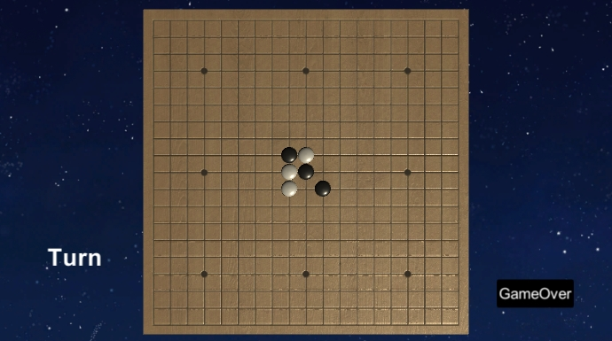
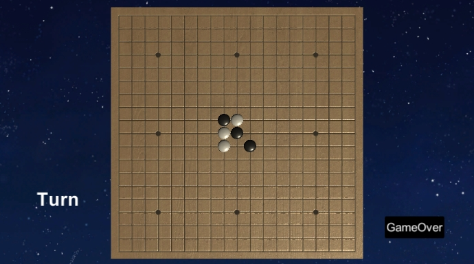

로고에 Omok 버튼을 누르고 들어오면 보이는 첫 화면이 사진1로써 firebase로 로그인 기능 구현하여 첫 유저는 회원가입을 하고 기존 유저는 로그인을 하게 만들었습니다.
전반적인 게임 시스템은 unity에 있는 U-Net으로 network를 달아서 진행되게 하였고, Host와 Client버튼을 누르면 게임이 시작되는데, 기본적인 로직은 따로 라이브러리를 만들어 관리를 하고 있습니다.
게임의 끝나면 승패가 나오면서 랭킹창이 뜨는데 이것 또한 firebase로 데이터를 저장하고 불러오게 만들었습니다.